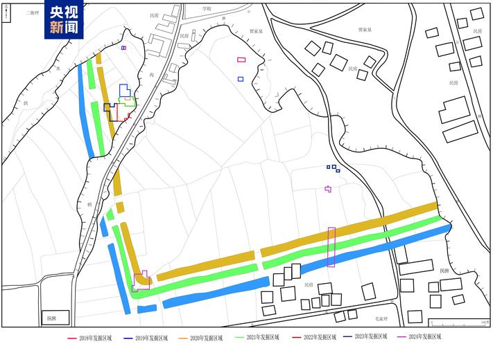
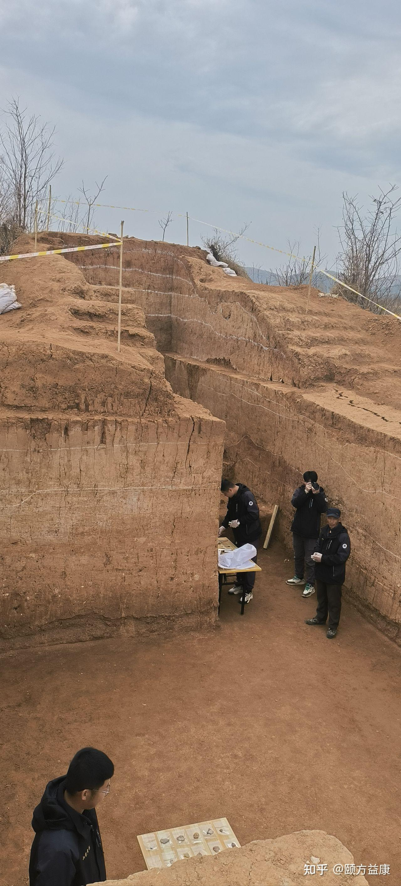
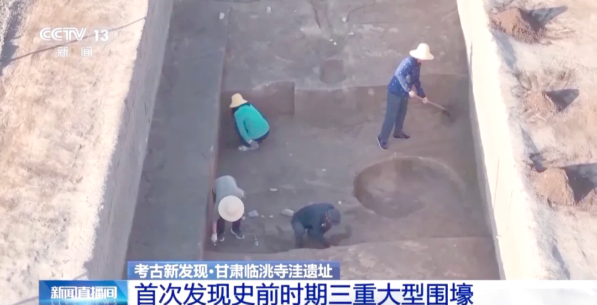
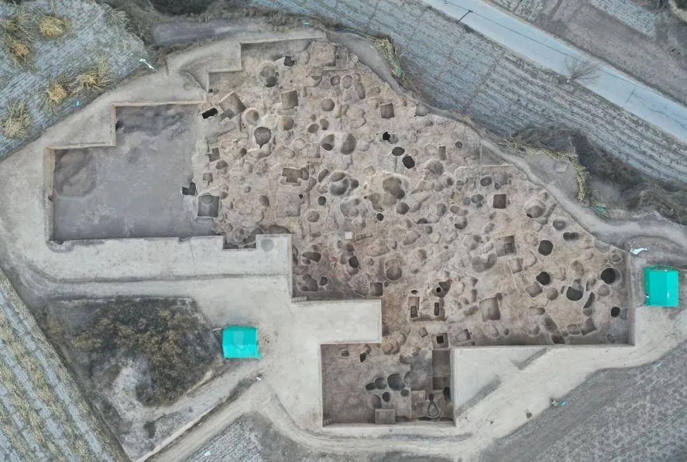

它念 wéi——是“国”字最外圈的那个方框。
我们只看见“国”的雄浑，却从没问过：那第一笔边界，从何画起？
在甘肃临洮，黄土与洮河之间，五千年前的先民，用锹与石铲，在大地上深深画下了一道边界。
这道沟，考古学上叫 围壕。
2024 年的中国考古新发现，在甘肃临洮县寺洼遗址，让沉睡五千年的三重近方形大型围壕重见天日。
距今约5000年 · 国内已知最早的多重近方形大型围壕结构
方形的边界，框住一方天地，也在心里种下“内与外”“家与国”的雏形。
原来“国”字最早的一笔，不在纸上，而在黄土里，被画成了壕沟。
五千年前，先民用一道壕沟圈出“我们的家”；
五千年后，我们在“国”字的方框里，认出了“我们的国”。
黄土之下，考古探方如棋盘般铺开。考古人在探方内俯身、刮面、编号——每一次挥铲，都在和五千年前的先民对话。




△ 图源：央视新闻 / 寺洼遗址联合考古队 / 知乎·颐方益康
考古现场之上，中央一个“囗”框——用手指或鼠标，沿框写下四笔：左竖、顶横、右竖、底横；
集齐外框四笔，你便写完了“囗”——文明的第一笔。
从一道沟，到一个“国”字，五千年，只完成了一笔的延伸。
现在再看“国”字，那一圈方框，是寺洼先民画下的第一笔，也是我们回家的第一道门。